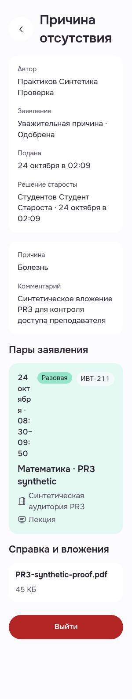
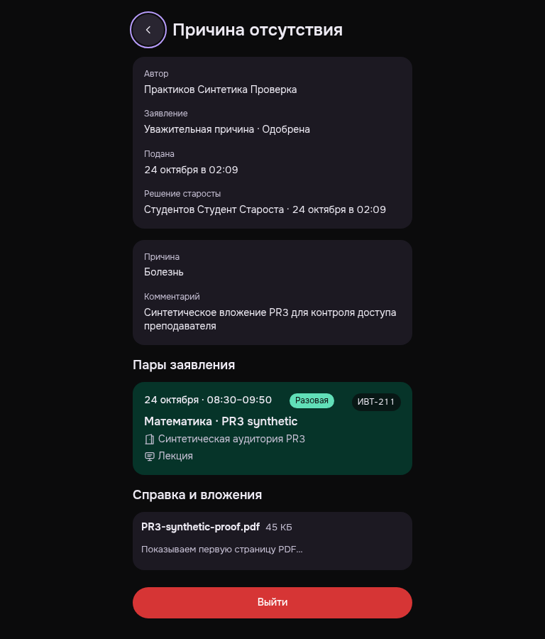

Преподаватель: существующая одобренная справка
Обычная навигация к заявке, настоящий GET вложения и возврат подтверждены. Исходные кадры сохраняют найденный дефект узкой карточки пары.
RawEXIT0/errors0/nativeBack; exact-own DELETE204/sameBearer401/browserclosed. No new request, approve/reject/comment/fixture/preference/grant/credential writes. V-TE-LESSONMETA-300-R20 requires correction: date/time compressed into a narrow column at enlarged root font. Not presentation READY. Exact native auto-preview GET200/applicationpdf46025 forwarded original response with redirects disabled. Neither original image proves a ready PDF first page or download; metadata/loading only. First PNG fullpage300x1580, actual viewport300x900.
Manifest · Критерии и ограничения
Причина отсутствия · approved · light · 300/root20 · с замечанием читаемости
Author/student/approval/reason/comment visible, no credentials. Lesson date/time fragmented vertically at narrow root20. Syntheticfilename shown; PDF firstpage not observed.
PWA-MOBILE-TEACHEREXCUSE__MB-TE-01-existing-approved-ticket-readonly__light__300__root20__63d97497e
revision 63d97497eba26577a8af5fa1428fcc3c959c8992
SHA256 adf36bbcea40fa99b19d4a24c9e24bc7e2514a5c788cea9260f1c80490cbcb76

Причина отсутствия · approved · dark · 768 · Back keyboard focus
Approvedticket content readable, Back focus ringvisible, date/time singleline. Syntheticfilename and PDFloadingcaption visible; fullPDFcontent notobserved. No credentials.
PWA-MOBILE-TEACHEREXCUSE__MB-TE-02-same-approved-ticket-back-keyboard-focus__dark__768__root16__63d97497e
revision 63d97497eba26577a8af5fa1428fcc3c959c8992
SHA256 4cfd3436f7a3946a076ce458740d01a95cd1f7f536c1052c1734477a58221af5
